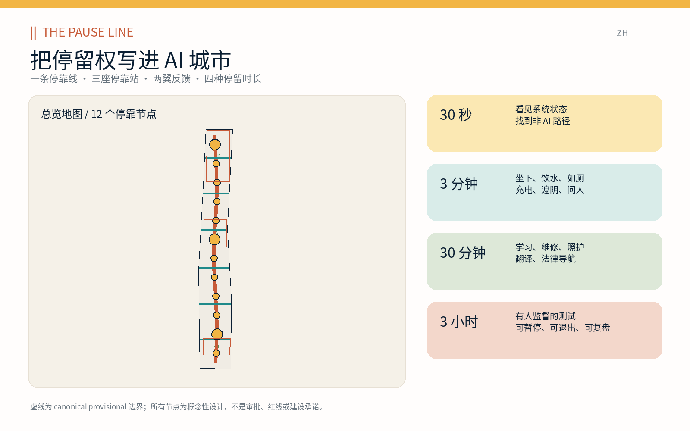
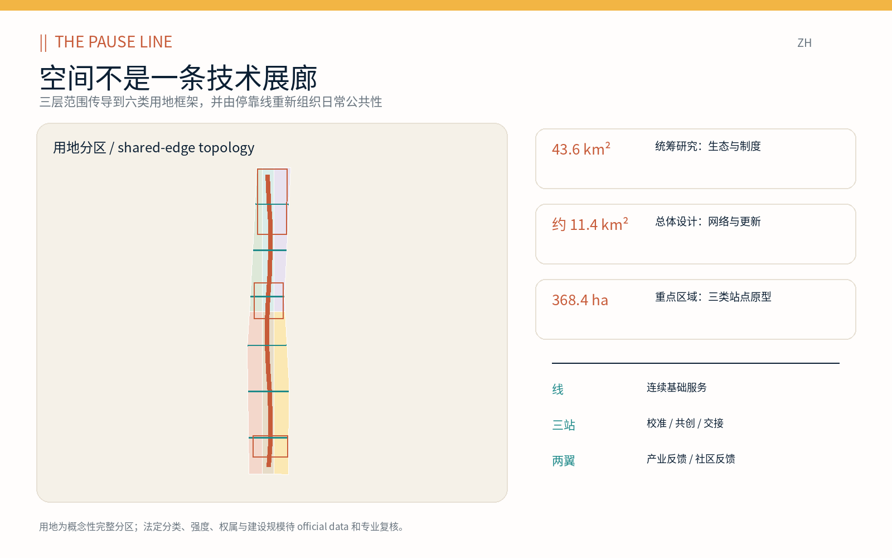
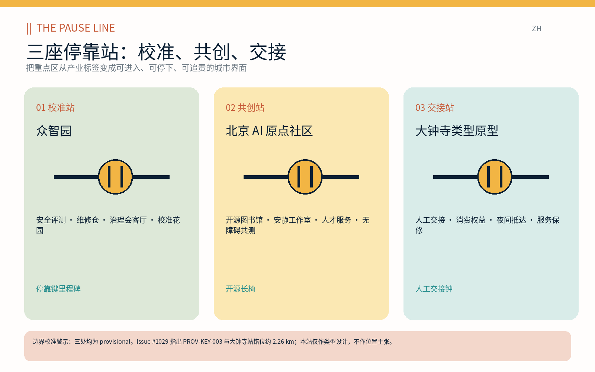
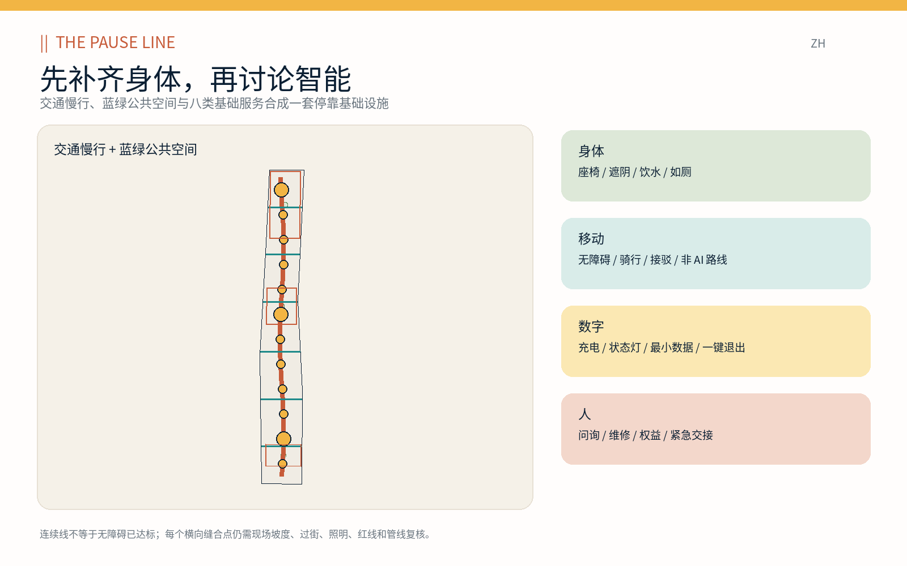
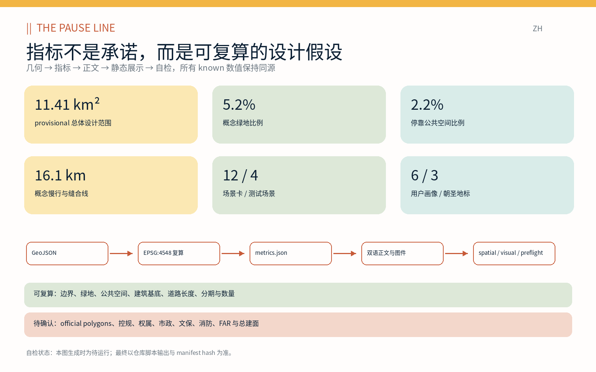

京张停靠 / THE PAUSE LINE：把停留权写进 AI 城市
京张停靠把休息、饮水、如厕、遮阴、无障碍、人工帮助、非 AI 路径和可退出的智能服务定义为创新带的公共底座，以一条停靠线、三座停靠站、两翼反馈和十二个场景节点构成可复算、可审查的城市设计。
京张停靠 / THE PAUSE LINE：把停留权写进 AI 城市
本方案提出一个简单但容易被“创新城市”忽略的判断：城市的智能程度，不只取决于它让人走得多快、看见多少屏幕、调用多少模型，也取决于任何人能否随时停下，获得身体补给，看懂系统状态，拒绝被识别，转向非 AI 服务，并把未解决的问题交给一个真实的人。京张停靠 / THE PAUSE LINE 因而不是一条技术展示廊，而是一项沿京张走廊组织的公共基础设施：一条连续停靠线、校准站/共创站/交接站三类重点原型、中关村科技服务翼与小月河场景赋能翼两条反馈链，以及从 30 秒到 3 小时的四级停留权。
设计依据与资料清单
方案的事实层按“官方公告—仓库登记资料—参与者生成设计”分级。官方公告用于确认 43.6 平方公里统筹研究范围、约 11.4 平方公里总体设计范围、三处共 368.4 公顷重点区域及必须回应的规划任务；面向智能体任务书用于确认“三区两翼”、全球案例、人才画像、场景卡、朝圣地标、身份文化和年度运营等开放征集要求。场地包的来源登记、枚举、指标结构与数据缺口清单是机器可读约束，而非新的法定依据 来源 来源。
当前仓库没有可公开取得的 official site boundary、重点区精确 polygon、控规地块、道路红线、权属、市政、消防或文保控制线。方案原样保留维护者提供的 canonical provisional geometry，不自行挪动来迎合概念。Issue #846 记录该临时总体范围与 OSM 京张铁路遗址公园参考几何不相交、最近约 412.5 米；Issue #1029 记录 PROV-KEY-003 位于北京北站一带、距大钟寺站约 2.26 千米。两项错位均是源数据层问题：本方案把它们列为待替换条件，不把概念图误写成场地事实 来源 来源。
参与者生成层包括六格用地框架、十二个建筑适配原型、一条南北停靠慢行主脊、六条东西缝合线、连续遮阴带、十二个公共停靠场、三期概念分区、五组双语图件、A3 文册、A0 展板和离线 HTML。所有面积以 EPSG:4548 从 GeoJSON 复算，边界衍生指标置信度为 medium；FAR、总建筑面积和工程控制保持 unknown。完整分级记录见 sources.json 与 assumptions.json 空间数据 指标。
全球参照只提取机制，不复制形态或数字：Kendall Square 的公共审议、混合功能和首层公共界面；one-north 的学研产业协作与非办公时段公共空间运营；MaRS 的中心城区创新生态连接；STATION F 的 SHARE/CREATE/CHILL 权限梯度；Knowledge Quarter 的知识资源公共接入；Smart Kalasatama 的短周期招募—试验—评估；波士顿滨水创新区以公共空间、交通和混合使用支撑 24 小时街区。每项均来自机构官网，并在参考资料中说明本地转译边界 来源 来源。

三层范围工作框架
三层范围不是把同一张图放大三次，而是三种不同的责任尺度。统筹研究范围回答“什么样的 AI 生态值得被城市承载”，总体设计范围回答“公共底座如何连续并与更新、交通和设施协同”，重点区域回答“一个人到达节点后究竟能做什么、谁负责、何时退出”。“停靠线”将三层从抽象战略传导到空间和运营：上位生态目标只有在总体网络中找到载体、再在重点站点经受使用与治理验证，才算完成 深度 标准。
| 层级 | 核心判断 | THE PAUSE LINE 的输出 | 校验方式 |
|---|---|---|---|
| 统筹研究范围（约 43.6 km²） | 创新生态是否同时支持研发、转化、生活和公共利益 | “一线三站两翼”制度模型、七个全球机制、身份与年度运营 | 产业链、案例矩阵、运营日历、来源登记 |
| 总体设计范围（公告约 11.4 km²） | 连续公共服务如何进入更新、慢行、蓝绿和建筑系统 | 六格用地、一条主脊、六条横向缝合、十二节点、八项更新项目 | GeoJSON topology、EPSG:4548 指标、图纸与静态 HTML |
| 重点区域（公告合计 368.4 ha） | 三类 AI 城市界面如何被使用和追责 | 校准站、共创站、交接站的功能、空间、交通、运营与停止规则 | 三处 provisional polygon、场景卡、人工复核与实施门槛 |
四级停留时间是跨尺度的体验合同。30 秒用于看清运行/测试/暂停状态并找到非 AI 路径；3 分钟保证座椅、遮阴、饮水、如厕、充电与人工问询；30 分钟承载学习、翻译、维修、照护、法律和消费者权益导航；3 小时只用于有预约、有监督、有隔离、有复盘的测试验证。任何层级都不能把“必须注册、必须刷脸、必须下载应用”作为获得公共底线服务的门槛。这一合同把技术选择权变成可观察的空间条件，而不是隐私政策里的小字。
“三区两翼”在本方案中不是另画一套边界：三个重点区分别承担校准、共创、交接；中关村科技服务翼把企业、知识产权、标准、安全和融资问题反馈给三站；小月河场景赋能翼把居民、维护者、照护者和夜间使用者的体验反馈给场景负责人。两翼是服务与治理关系，不是未经依据的土地控制线。总体空间结构以临时范围内的共享边界用地单元表达 空间数据 深度。

统筹研究范围产业与未来城市研究
京张 AI 生态的价值链被组织为“问题发现—开放研究—受控验证—产品转化—公共采用—维护退出”六步，而不是从实验室直接跳到城市部署。高校与研究机构提出问题和可复现实验；开源社区维护公共组件与文档；初创企业把组件转成产品；头部企业提供工程、安全和规模能力；公共部门与社区定义采购、可达性和权益底线；维修、客服与审计团队负责产品进入城市后的生命周期。停靠站是六步之间的城市接口：每次传递都有对象、负责人、证据和退出条件 来源 深度。
七个国际案例形成一张“可采用机制/不可照搬结论”矩阵：MaRS 说明中心城区密度能缩短生态连接，但不能据此推导海淀需要相同机构规模；Kendall Square 说明公共空间、首层活力和公共审议可与创新用地同步，但其分区规则不能移植；one-north 说明下班后和周末编程能减少园区空心化，但需本地运营主体；STATION F 说明公共、半公共与受限测试空间应清楚分区；Knowledge Quarter 说明知识资源要有面向市民的入口；Kalasatama 说明试验必须以学习与评估收尾；波士顿说明就业增长要由可达滨水、公共交通、居住与市民空间共同承托 来源 来源 来源。
未来城市形态因此不是“万物智能”，而是三种可辨识状态。常态城市默认提供无追踪的座椅、路径、信息与人工服务；试验城市在有界时间、地点和人群中显示橙色状态，公开数据字段、责任人和停止条件；暂停城市在故障、投诉、超限、人工不足或公众要求下立即退回非 AI 模式。状态通过停靠键里程碑、地面双线符号和站点灯带被看见，线上账本只公布聚合指标、版本、事件和处置，不公布人的轨迹。
品牌名“京张停靠 / THE PAUSE LINE”中的 || 同时取自铁路双轨和暂停符号；一处有意留白表示退出与人工接管。色彩使用京张铁锈红、停靠琥珀、服务青、树荫绿和墨蓝；不使用企业商标、人物肖像或历史照片。年度运营按四季循环：春季“开放维护月”修复设施与文档，夏季“树荫与夜间共测”检查热舒适和安全，秋季“开源贡献周”展示代码/数据/维修贡献，冬季“暂停审计”公开哪些服务被停掉、为什么、是否恢复。年度节奏服务长期治理，而不是一次性节庆宣传。
产业绩效不以屏幕数量或注册用户数为主，而以“问题到责任人的交接时间、非 AI 服务可用率、公共设施修复时长、无障碍共测关闭率、试验按规则停止率、开源问题关闭质量”衡量。这些属于未来运营指标，当前没有基线，故不写入 known 数值；只有完成运营授权和连续采样后才能建立年度目标。方案把“创新成功”定义为更多可维护、可拒绝、可复制的公共能力，而不是更多不可退出的自动化。
总体设计范围城市更新与控规深度城市设计
总体设计以“一条停靠主脊、六条东西缝合、十二个停靠场、六类概念用地、十二个建筑适配原型”形成可审查骨架。主脊是约 16.1 公里的概念性慢行与连接线总量中的南北核心；六条横向线分别承担步行、骑行或轨道接驳类型，但都不是道路红线。十二个停靠场沿线分布，三个加大节点对应重点区类型；连续遮阴带和三座停靠花园提供气候舒适。几何完整位于 provisional site，且可由空间脚本复核 空间数据 指标。
六个共享边界用地单元完整覆盖临时总体范围：教育科研、AI 研发、公共停靠广场、公园绿地、创新商业、社区服务。这个六格框架不是现状调查结果，也不替代法定用地；其用途是检验功能混合是否能让研发人员、居民、服务劳动者和访客在日常步行中共享设施。中心带优先表达公共空间和绿地，两侧容纳研究、教育、商业与社区服务，使公共底座不成为园区背面 标准 深度。
十二个建筑基底是小尺度“适配包络”，总基底约 16.13 万平方米，仅表示公共服务可能嵌入建筑的位置与数量级。四个标记为“保留并改造”的原型示范首层开放、遮阴连廊、公共厕所、维修和人工服务；其余是适应性填充原型，用于孵化、实验、文化、人才与社区功能。没有现状建筑测绘、结构安全、权属、消防、日照、限高和控规条件，故不做任何真实建筑的拆除或保留决定，FAR 与总建筑面积保持 unknown 空间数据 指标。
控规深度在本包中被拆成“可以审查的设计层”和“必须等待的法定层”。可审查层包括完整用地 topology、公共空间网络、建筑原型、交通组织、蓝绿连续性、更新项目、分期和指标证据链；等待层包括地块界线、主导用途、兼容比例、容积率、建筑高度、密度、退线、道路红线、设施标准和建设量。专业团队获得 official geometry 后，应先重投影和替换边界，再裁切/重构所有设计图层、重新计算指标并对每项控制开展人审，不能只更换底图 标准 深度。
城市更新策略优先“补、借、改、连”，最后才讨论“拆”。补，是增加基础补给与人工服务；借，是用既有首层、架空层、院落和边角地开展可逆试点；改，是改善无障碍、遮阴、入口和设备；连，是缝合断点和服务时段。只有经结构、消防、文保、碳排、权属和公共利益比较后，才可能进入拆除论证。这样的顺序让 AI 创新带从运营和维护开始，而不是以大拆大建证明创新。
重点区域详细设计
三处重点区都保留 canonical provisional polygon，并分别转译为一种可迁移的站点类型。它们的功能、建筑、交通、公共空间和运营建议可以接受内容评审，但位置和面积不能被当作 official key-area boundary；特别是 PROV-KEY-003 的已知错位使大钟寺站一体化只能以类型原型表达 空间数据 指标。
01 众智园 AI 自主创新加速区 / 校准站。 功能上设置安全评测预约、端侧维修、标准咨询、开源依赖核查和治理会客厅；建筑上优先改造首层与院落，形成可见但有隔离的慢速机器人/模型测试场，实验区与公共通行带以实体边界和状态灯区分；交通上把北侧对外联系、清河方向慢行和服务车辆时窗分开；公共空间以“校准花园”承接等候、复盘和低碳展示。运营由测试负责人、设施负责人和独立公众联络人三签开启，任一方可暂停。地标“停靠键里程碑”只显示运行、测试、暂停三种状态，不显示个人排名。
02 北京 AI 原点社区 / 共创站。 功能上组合开源图书馆、安静工作室、成果小发布厅、人才欢迎台、法律与知识产权导航、无障碍共测室和照护者友好空间；建筑上用可逆隔墙、共享设备柜和沿街首层形成从完全公共到预约协作的权限梯度；交通上强调校区—园区—社区步行骑行缝合与轨道接驳的非 App 路线；公共空间以“共创花园”和可移动长桌支持小规模活动。地标“开源长椅”按已核验贡献类型展示文档、维修、翻译、代码、数据与社区照护，不以融资额或头衔决定荣誉。
03 大钟寺 AI 产业聚集区 / 交接站类型原型。 功能上设置人工交接台、智能终端消费者权益与维修保修、夜间抵达、内容标注申诉和数据授权撤回；建筑上形成全天可见的人工窗口、安静等候区和无障碍卫生间；交通上提出站厅—街角—企业首层—公交/骑行的连续交接方法；公共空间用“交接花园”容纳等待而非强迫消费。地标“人工交接钟”只有在真实工作人员接单后才点亮。由于 Issue #1029 的约 2.26 千米错位，上述站点与四象限连接均不画成临时 polygon 内的现状事实，待 official boundary 与站点 GIS 到位后重新落位 来源 深度。

三站共享一份“开站门槛”：公共基线服务已可用；负责人、工作时段和投诉渠道可见；试验数据字段、保存期限和退出按钮已公布；无障碍与儿童安全完成现场人审；故障时有非 AI 流程；结束后 30 天内发布聚合复盘。没有满足门槛的空间仍可作为普通公共空间开放，但不能以“AI 场景”名义采集数据或影响通行。
AI 创新生态、人才画像与 AI+ 场景
生态服务围绕六类人物而非单一“高端人才”展开。研究者/开发者需要安静、协作、计算与复现；早期创业者需要低成本测试、合规、维修和首位用户；周边居民与照护者需要不被活动挤占的休息、儿童与日常服务；老年人及残障访客需要连续无障碍、低认知负担和人工帮助；清洁、安保、维修、配送等服务劳动者需要可进入的补给、夜间安全与工作尊严；国际访客和夜间工作者需要双语信息、抵达支持和明确的求助交接。六类都能使用公共底线，不以企业身份或注册账号分级 指标 深度。
| 人物 | 典型一天的阻力 | 空间与服务回答 | 不得越过的边界 |
|---|---|---|---|
| 研究者/开发者 | 找测试对象、复现实验、夜间协作 | 校准站、安静工作室、开源图书馆、预约沙盒 | 不把研究账号绑定公共通行；不公开未清权成果 |
| 早期创业者 | 合规成本高、维修与首测难 | 共测室、维修仓、法律/知识产权导航、受控首测 | 场景开放不等于采购或政府背书 |
| 居民/照护者/儿童 | 活动挤占、缺座椅厕所、噪声 | 3 分钟补给、照护空间、安静时段、活动上限 | 不将家庭关系或儿童行为用于推荐 |
| 老年人/残障访客 | 坡度断点、界面复杂、求助困难 | 无 App 导视、连续座椅、人工交接、共测权 | 不以“AI 辅助”替代法定无障碍与人工服务 |
| 服务劳动者 | 后台化、休息难、夜间风险 | 开放补给、维修接口、夜间灯光与紧急交接 | 不用绩效模型跟踪个人移动和休息 |
| 国际/夜间使用者 | 语言、支付、末班接驳与安全 | 双语静态信息、人工窗口、非数字支付/求助路径 | 不默认录音翻译，不因国籍或语言差别定价 |
十二张场景卡统一采用“对象—空间—最小数据—人工复核—非 AI 等价—停止/退出”结构；★ 为四个 Testing and Validation Scenario。geometry/public_space.geojson 为每张卡提供一个概念性停靠场，但运营边界以现场划定和许可为准 空间数据 指标。
| 编号 / 场景 | 对象与空间 | 最小数据 | 人工复核与非 AI 等价 | 停止 / 退出规则 |
|---|---|---|---|---|
| SC-01 停靠地图 | 全体；沿线导视点 | 设施开闭、无障碍状态，不采身份 | 值班员核对；纸图和固定标识常在 | 数据超过更新时限即下线动态推荐；一键切静态图 |
| SC-02 基本补给 | 行人/劳动者；12 节点 | 水、厕、座、充电设备状态 | 设施人员巡检；可直接看标识/问人 | 状态错误连续两次即停自动播报，现场服务不停止 |
| SC-03 无障碍共测 ★ | 残障与老年共测者；共创站 | 经同意的任务结果和障碍类型，不存人脸 | 无障碍专家与共测者共同签字；人工陪同行程 | 任意共测者可退出并删除本次记录；安全事件立即停测 |
| SC-04 端侧维修实验 ★ | 初创/维护者；校准站 | 设备日志的必要字段，默认本地处理 | 维修工程师批准导出；普通人工维修并行 | 出现越权读取、温升或未知写入即断网断电并封存 |
| SC-05 低速模型与机器人测试 ★ | 产品团队/公众观察者；隔离场 | 任务成功、干预、近失事件，不做人群画像 | 安全员持物理急停；围栏外通行不依赖测试 | 越界、急停、投诉阈值或监督人员离岗即终止 |
| SC-06 人工交接台 | 服务失败者；三站 | 工单内容、联系方式可选且限时 | 真实工作人员接单；现场窗口/电话等价 | 用户可匿名咨询、撤回授权；超时自动升级而非自动结案 |
| SC-07 安静学习与翻译 | 学生/国际访客；原点社区 | 用户主动提交的一段文本或本地语音 | 双语志愿者抽核；纸本/人工翻译可选 | 默认不保存语音；用户结束会话即清空临时内容 |
| SC-08 照护者与儿童共享 | 家庭；社区停靠场 | 只计聚合人数与设备故障 | 照护者和运营员观察；非智能游玩设施常开 | 不做儿童识别；拥挤、噪声或安全投诉触发活动暂停 |
| SC-09 夜间抵达伙伴 | 夜班/访客；接驳节点 | 班次、亮灯、开放窗口，不追踪个人路线 | 夜间值班员复核；固定路线牌与人工求助 | 数据过期即只显示静态信息；用户可完全不用手机 |
| SC-10 铁路记忆停靠 | 公众；文化节点 | 清权史料索引与用户主动选择语言 | 史料编辑人审；实体铭牌与人工讲解 | 文保来源存疑或权利人异议即撤下数字内容 |
| SC-11 公共维护账本 | 设施用户；全线 | 设施 ID、时间、问题、状态，不公开报修人 | 维护主管关闭工单；纸单/电话可报修 | 个人信息误入即遮蔽；工单不能由模型无证据关闭 |
| SC-12 活动停靠协议 ★ | 活动主办方/公众；全线 | 聚合容量、设施与安全状态 | 安全、无障碍、社区三方开场；普通开放空间保留 | 超容量、出口受阻、人工不足或社区红线触发缩减/取消 |
AI 城市治理采用四把“实体钥匙”：状态可见、人工急停、非 AI 旁路、事件后复盘。模型可以推荐空闲座位、把设施故障聚类、辅助翻译或整理工单，却不能决定谁可以进入公共空间、替代规划审批、在没有人审时关闭投诉，也不能把测试同意扩大成营销授权。每个场景的供应商和模型可以更换，但这四把钥匙必须保持；这让空间制度不被某一技术栈锁定 标准 深度。
用地、建筑规模与拆改留方案
用地层是检验功能关系的“概念性完整分区”，不是现状用地或法定控规。六格采用仓库允许的分类代码：0804 教育科研与近校协作、0802 自主研发与校准测试、1403 公共停靠与交接广场、1401 连续停靠公园、05 创新商业与夜间服务、0702 社区照护与人才服务。共享边界保证 provisional site 无缝覆盖、无内部重叠；获得正式地块后应按权属、现状和法定分类重新细分，不以当前色块确定任何宗地用途 空间数据 标准。
建筑层给出十二个 96×140 米量级的小包络原型，分别承载社区服务、接驳、教育、实验、孵化、文化、零售、办公、混合功能、AI 研发与人才服务，复算 union footprint 为 161,279.945 平方米。该值只表示提交几何，不是现状总基底或建设计划 指标。建筑高度、层数、总建面、BCR、FAR、退线、日照、停车和消防均无可靠依据，任何视觉表达不得反推出精确强度。
拆改留采用两级筛选。第一级是不可替代价值：文保/历史、成熟树木、公共服务、可负担空间、社区记忆和高隐含碳结构优先保留；第二级是适配能力：结构安全、消防疏散、无障碍、采光通风、首层开放与设备可维护性决定“轻改、深改或另行论证”。拆除必须同时说明公共利益增量、全生命周期碳、搬迁安置、权利主体和替代方案，不能因为外观“不科技”就拆 深度 深度。
四类建筑界面形成明确的公共性梯度：A 类全天候外部公共补给；B 类工作时段人工服务和展阅；C 类预约共创与培训；D 类受控测试和设备后台。A/B 类不得要求进入 C/D 类系统才可使用；D 类必须有物理隔离、急停和服务车辆独立时窗。屋顶优先遮阴、光伏可行性、雨水和设备维护，立面优先可开启首层、清晰入口和不过度发光；但所有做法都是待结构、市政、消防和风貌专业复核的设计原则。
建筑规模的下一步不是“补一个看似合理的 FAR”，而是建立 official parcel—现状 building—权属—结构—控制条件五表联查。每个包络需获得唯一地块 ID、现状用途、合法性和使用者访谈，再决定是否保留/改造/填充；随后才可把基底乘以合规层数形成总建面。当前 total_floor_area_sqm 与 floor_area_ratio 保持 unknown，体现数据诚实而非设计遗漏 指标 深度。
交通、轨道、市政与公共服务设施
交通系统以步行、骑行、无障碍和公共交通换乘的“可停靠连续性”为主。南北主脊不是只追求最短时间，而是每一段都能在合理距离内找到座椅、遮阴、饮水、厕所、充电和人工帮助；六条东西缝合线分别测试校园/园区/社区/轨道之间的穿越。道路几何是中心线级概念，不代表红线或断面；现场必须复核坡度、台阶、过街相位、桥下净空、照明、冬季结冰、非机动车冲突与夜间可见性 空间数据 深度。
轨道一体化采用“站内看得见—出站不迷路—首个停靠点有人—最后一段不用 App”的四步。五道口、清华东路西口和大钟寺等公告关联节点只有在获得官方站点/出入口 GIS 和交通组织后才能精确落图。对 PROV-KEY-003，本方案明确不把临时 polygon 当作大钟寺站：交接站的站厅—街角—企业首层—公交/骑行链条是一套待迁移类型。停车不设虚构泊位指标，先做共享、错时、无障碍和配送时窗调查，再按法定标准核定。
市政与公共服务被组合成四个包：身体包含座椅、遮阴、饮水、厕所和急救；移动包含连续无障碍、骑行停放、静态导视和人工接驳；数字包含低功耗状态灯、充电、端侧处理和公开版本信息；人工包含问询、维修、消费者权益、法律导航和紧急交接。传统市政是数字服务的前置条件：没有稳定电力、排水、通信、消防和维护责任，设备不得以“智慧设施”名义上线 来源 深度。

新型基础设施遵循“边缘优先、最小联网、可拔除”。端侧节点只处理本场景必要数据；需要上传时列明字段、目的、保存期和接收方；公共 Wi-Fi、传感器和充电设备使用独立网络区，不能与安防或企业生产系统默认合并；远程更新保留版本、回退和人工批准。设施柜、检修门和线缆路线在设计中与座椅、树池和盲道一起考虑，避免技术维护再次阻断通行。
公共服务以“开放时段矩阵”而非单个服务半径管理。3 分钟补给尽量全天可用；人工交接覆盖通勤与夜间关键时段；共创和测试按预约开放；大型活动不能关闭连续通行和基本厕所。运营主体需每季度公布设施可用率、人工覆盖缺口、维修时长和投诉处置，不公布个人活动热力图。紧急事件仍服从现行公安、消防、医疗和交通体系，城市智能体只做信息辅助，不替代责任机构。
蓝绿空间、公共空间与城市风貌
蓝绿系统的核心不是多画一条绿色带，而是让热舒适、雨水、生态和停靠发生在同一断面。提交几何包含约 597,439.678 平方米概念绿地 union，约占 provisional site 的 5.2348%；其中连续遮阴带沿主脊形成基本骨架，三座停靠花园承担等待、复盘和小型活动。比例是设计方案内部指标，并非法定绿地率；清河、小月河、成熟树木、海绵设施和防洪边界均需官方资料和现场调查后重构 指标 指标。
十二个停靠场 union 约 252,479.558 平方米，占临时范围 2.2122%。其空间原型包括靠背座椅、轮椅并排位、婴儿车停放、饮水与厕所导向、遮阴/避雨、夜间可见的人工窗口和不经过测试区的通行线。公共空间比例不等于全部对外开放面积，也不保证土地权属；它用来检验十二个场景是否有足够的可进入载体 指标 指标。
城市风貌以“铁路精确、AI 克制、维护可见”为原则。铁路精确意味着只有清权且经专业确认的史料、构件和位置才能进入叙事；AI 克制意味着状态灯和信息面服务方向与责任，不制造铺天盖地屏幕；维护可见意味着检修、更新、暂停和人工劳动成为城市形象的一部分。Issue #846 表明当前 boundary 甚至未与 OSM heritage park 参考相交，因此清华园车站、铁路构筑物或文保关系不在图上作伪精确定位 来源 标准。
三处“AI 朝圣/荣誉节点”避免英雄雕像逻辑。停靠键里程碑表彰主动暂停不安全测试的团队；开源长椅表彰代码之外的文档、翻译、维护、无障碍和社区贡献；人工交接钟表彰在自动化失败后承担责任的人。荣誉展示采用可核验项目、贡献类型、年份和撤回机制，不展示未经同意的肖像、个人绩效或融资排名。三处计入 landmark_count=3，但其最终位置依赖 official geometry 与公共艺术审查 指标。
文化运营把 1909—当代的京张铁路叙事理解为“技术如何被社会学习、维护和公共化”，而不是将历史包装成 AI 背景板。铁路记忆停靠使用实体铭牌和可选数字音频双轨；任何 AI 生成复原必须显著标注、列出依据并经史料人审。品牌 || 可由路面嵌条、座椅间隙和状态灯低强度重复，不占用盲道、不模拟交通信号、不干扰文保本体。
更新项目清单、实施政策与分期计划
八项更新项目从可逆、可评估的公共服务开始，再进入空间和制度建设。项目数是本方案结构化清单，不是政府立项数量 指标。每项都设“进入门”：明确权属或使用许可、责任主体、资金、无障碍/安全审查、数据规则和公众反馈；缺一项则退回研究或普通公共空间运营。
| 编号 | 更新项目 | 阶段与牵头建议 | 进入条件 | 评估与退出 |
|---|---|---|---|---|
| PL-01 | 12 点基础补给普查与可逆试点 | 近期；街道/公园运营者+设施团队 | official 点位、现场审计、厕所饮水维护协议 | 设施可用率、维修时长；维护无主即撤设备保留座椅导视 |
| PL-02 | 停靠主脊与六条横向缝合 | 近期—中期；交通/园林/属地 | 红线、过街、坡度、树木、管线和消防复核 | 断点关闭率、无障碍人审；安全不达标则缩短示范段 |
| PL-03 | 众智园校准站 | 中期；园区+独立测试运营者 | 真实边界、隔离、急停、保险与公开测试规则 | 近失事件、停止执行率；监督缺岗即停测 |
| PL-04 | AI 原点共创站 | 近期—中期；高校/社区/开源组织 | 首层许可、安静时段、无障碍和照护安排 | 多类型贡献、社区投诉；活动挤占公共基线则限流 |
| PL-05 | 大钟寺交接站迁移落位 | official data 后；轨道/属地/企业 | 纠正 PROV-KEY-003、站点 GIS、四象限交通与权属 | 人工接单时长、非 App 成功率；无人工覆盖则不启用 AI 引导 |
| PL-06 | 公共维护账本 | 近期；设施运维联盟 | 统一设施 ID、隐私审查、纸单/电话通道 | 工单关闭证据、个人信息事件；越权采集即下线数字端 |
| PL-07 | 三座荣誉地标与铁路记忆停靠 | 中期；文化/文保/社区策展 | 史料、版权、文保和公共艺术审查 | 内容纠错与撤回；来源存疑即撤下数字叙事 |
| PL-08 | 年度“开放维护—共测—贡献—暂停审计” | 连续运营；多方理事会 | 年度预算、场地许可、安全与公开评估 | 改进项完成率；不能公开复盘的活动不续办 |
三期几何只是说明推进逻辑，不是行政或建设边界。Phase 1（约 4,229,811.537 平方米的临时几何带）优先基础普查、可逆补给、静态导视和维护账本；Phase 2（约 3,856,939.077 平方米）推进横向缝合、建筑适配与共创站；Phase 3（约 3,326,074.771 平方米）在 official data、控规和专业条件具备后推进站点一体化、校准站和长期治理。面积仅为当前 topology 分带，用于复算，不表示先后征地或投资范围 空间数据 深度。
政策工具包括：公共底线服务不可附带数据同意；测试许可证写明空间/时间/对象/急停；开放场景采用标准化申请与复盘模板；公共采购评价维护、可达和退出能力；首层公共服务以运营协议锁定时段；设施采用可维修和可替换接口；贡献荣誉覆盖照护和维护劳动；跨主体理事会每季度公开问题而不是只公开成果。规划、产业、交通、园林、数据、消防和社区代表均保留否决不安全试验的权力。
年度运营不是一周活动后归零。每月公开设施维护清单，每季度举行三站开放日和人工交接演练，每半年开展无障碍/夜间/儿童三类共测，每年发布“停靠报告”：哪些服务常用、哪些从 AI 退回人工、哪些投诉未解决、哪些数据被删除、哪些项目没有续期。任何活动的转化目标必须是修复一个设施、关闭一个风险、改进一份规则或形成一项清权公共资源，而不是只统计流量。
指标体系、面积复算与合规矩阵
指标体系坚持单一事实源：GeoJSON 在 EPSG:4548 复算，结果写入 metrics.json，正文和两种语言的 HTML/PNG/PDF只读取或复述这些值。空间复核对 site、land-use coverage、inside-site、key areas、green/public/building union 进行检查；视觉复核用 data-metric 对照。任何后续几何变化都必须先重算指标，再刷新图件和 manifest hash 深度 空间数据。
| 指标 | 当前值 / 状态 | 含义与置信度 |
|---|---|---|
| 总体范围面积 | 11,412,825.386 m² | canonical provisional polygon 的 EPSG:4548 面积，medium，不是 official 精确面积 |
| 建筑原型基底 union | 161,279.945 m² | 十二个设计包络，medium，不是现状建筑总量 |
| 概念绿地 union / 比例 | 597,439.678 m² / 5.2348% | 遮阴主带与三花园，medium，不是法定绿地率 |
| 停靠公共空间 union / 比例 | 252,479.558 m² / 2.2122% | 十二场景载体，medium，不是权属或开放承诺 |
| 概念道路/慢行中心线 | 16,084.109 m | 一主脊六缝合线总长，medium，不是道路红线长度 |
| 重点区 / 停靠节点 | 3 / 12 | 重点区为 provisional；节点为参与者设计数量 |
| 场景 / 测试场景 / 用户画像 | 12 / 4 / 6 | 由正文表与公共空间属性计数，high |
| 朝圣地标 / 更新项目 | 3 / 8 | 由正文清单计数，high |
| 三期面积 | 4,229,811.537 / 3,856,939.077 / 3,326,074.771 m² | 完整覆盖临时 site 的概念分带，medium |
| FAR / 总建筑面积 | unknown / unknown | 缺 official parcels、控规、建筑与权属，禁止填伪精确值 |
关键数量可由机器条目直接核对：停靠节点 12 个 指标，场景卡 12 张 指标，用户画像 6 类 指标。三期面积分别保存在 phase_1_area_sqm、phase_2_area_sqm 和 phase_3_area_sqm，不在图面放大为实施承诺 指标 指标 指标。

compliance_matrix.json 覆盖公告 1.3、1.4、1.5 和 agent.1—agent.6，并把每项任务连接到章节、图层、指标、图件、来源、假设和自检；standard_matrix.json 区分项目文件、城市设计办法、控规深度和用地分类；design_depth_matrix.json 覆盖现状诊断、三层范围、总体结构、用地、强度、风貌、拆改留、交通、市政、蓝绿、三重点区、项目、分期、复算与风险。矩阵证明“回应存在”，不代替专业质量判断 标准 深度。
自检门槛分为阻断、主要、次要和信息。几何无效、用地缺口/重叠、越界、必需文件或翻译缺失、远程 HTML、零页 PDF 和作者路径不一致属于阻断/主要；provisional key area 提示属于次要但必须保留。最终状态以 validate_submission.py、spatial_review.py、visual_review.py、professional_review.py、self_check_submission.py 和 participant_preflight.py 的实际输出为准，而不是图上的“通过”字样。
风险、版权与合规说明
最高风险不是模型精度，而是空间源数据错位和实施责任悬空。空间争议评分应为 5/5：边界与 heritage park 参考几何错位，PROV-KEY-003 与大钟寺站错位；缓解是原样保留 canonical provisional、图文重复警示、禁止位置性承诺，并把 official replacement 设为专业深化第一道门。政策不确定性、实施复杂度和运维成本均为 4/5，因为跨规划、交通、园林、数据、消防、运营和社区；缓解是从可逆试点开始，每项设责任人、预算和退出条件 来源 深度。
数据隐私风险 3/5：场景原则上不收身份、脸、声和持续轨迹，但翻译、维修和交接可能接触用户主动提交内容；缓解是端侧优先、字段清单、短保存、选择性联系方式、删除与非 AI 旁路。公平包容风险 4/5：高科技活动可能挤占居民、劳动者、儿童与残障者空间；缓解是公共底线优先、六类画像共测、安静时段、容量上限和人工否决。技术成熟度 3/5、公众接受度 3/5；任何未知性能都进入隔离测试，不在公共通行上边运行边证明。
本方案不声称获得官方批准、正式评分资格确认、建设投资、土地权利、运营授权或采购意向。它也不把 AI 输出作为规划审批、文保认定、消防审查、交通工程、结构鉴定或无障碍验收。正式实施需要依法完成相应规划、工程、数据、采购、公众参与和权利主体程序。manifest.package_state=ready_for_review 只表示投稿包完成自检，不等于方案获批或 geometry 可信度升级。
版权方面，五组中英文 PNG、四套 PDF、两份 HTML、文字、表格、标识和 GeoJSON 设计层均由本次参与者工作流生成；没有使用照片、企业 logo、人物肖像、远程地图瓦片或第三方图标。字体 Noto Sans CJK SC 仅用于把参与者文字栅格化到图件，来源为 notofonts/noto-cjk，遵循 SIL Open Font License 1.1；字体文件不进入投稿包。官方/机构网页仅被概述并链接，不复制长文和图片。详细清权声明见 report/copyright_statement.md 来源。
COMMUNITY-DISPLAY-ONLY 许可允许赛事仓库按其条款展示本方案，不将第三方网页、官方资料或字体重新许可。若维护者希望将某一可复用协议或图形独立开源，需要与作者另行明确范围；当前声明不影响所引用来源自身的权利。HTML 完全离线，不含脚本、远程字体、iframe、表单、fetch、遥测或追踪；评审打开文件不会向第三方发送请求。
参考资料
本节列出正文真正使用的依据及用途。权威级别、路径、URL 和使用边界同时保存在 sources.json；事实主张回到原始页面，参与者的归纳不替代原始来源。场地包与 processed fact pack 只作任务和数据导航，临时几何只作概念生成。所有链接在 2026-08-10 参与编制时查阅 来源 来源。
- 北京市规划和自然资源委员会海淀分局，《百年京张 AI 创新带城市设计国际方案征集资格预审公告》：范围、任务与重点片区的第一依据；不据此推导未公开控制线。公开页：
https://ghzrzyw.beijing.gov.cn/zhengwuxinxi/tzgg/hd/202605/t20260509_4643047.html。 brief/site-package/、agent_taskbook.json、data/source_registry.json、data/processed/agent_fact_pack.md：赛事仓库提供的任务、枚举、范围、来源用途和缺口导航。brief/site-package/geometry/provisional_boundaries.geojson：维护者定义的 canonical provisional geometry；仅供生成、讨论、展示和临时复算 来源。- GitHub Issues #846、#1029：分别记录 site/OSM heritage park 与 PROV-KEY-003/Dazhongsi Station 的对齐缺口；用于风险披露，不用来独立修改边界。公开页：
https://github.com/open-city-ai/haidian/issues/846、https://github.com/open-city-ai/haidian/issues/1029。 - City of Cambridge, Kendall Square/Volpe planning page：公共审议、创新空间、开放空间和活力首层机制；不移植其分区数字。公开页：
https://www.cambridgema.gov/CDD/Projects/Zoning/pudksvolpesite。 - JTC, one-north estate 与 places-for-people 资料：学研产业协作和公共空间编程；不假设同一产权或运营结构。公开页：
https://www.jtc.gov.sg/find-land/jtc-key-estates/one-north?estate=one-north。 - MaRS Discovery District, About：中心城区创新枢纽及生态连接机制；不使用其宣传数据作为海淀目标。公开页：
https://www.marsdd.com/about/。 - STATION F, campus organisation：SHARE/CREATE/CHILL 权限梯度及一站式支持；本方案仅借鉴“公共—协作—受控”分区逻辑。公开页：
https://faq.stationf.co/hc/en-us/articles/115003119905-How-is-the-STATION-F-campus-organized。 - Knowledge Quarter London：知识机构协作与向公众开放资源；不复制成员规模或空间边界。公开页：
https://www.knowledgequarter.london/。 - Forum Virium Helsinki, Agile pilots：招募、开发、试验和评估的短周期共创；转译为场景的进入/停止/复盘门槛。公开页：
https://forumvirium.fi/en/about/agile-pilots/。 - Boston Planning Department, South Boston Waterfront Public Realm Plan：公共空间、可达滨水、混合使用、公共交通和全天街区的联合框架；不移植 waterfront 形态 来源。
- Ministry/agency standards registered under
brief/site-package/：城市设计管理、控制性详细规划深度与国土空间用途分类；本包用其组织专业核对，不声称完成法定编制 标准。
复核者应优先阅读 assumptions.json 中 A-BOUNDARY-001、A-HERITAGE-001、A-DAZHONGSI-001 和 A-CONTROLS-001，再查看 GeoJSON 和指标。若 official polygons 或任何正式附件在评审期间发布，本版本不得继续用旧数值形成位置、面积或工程结论；正确动作是新建一次可追踪迭代，记录数据版本、坐标系、转换方法和全部重算差异。